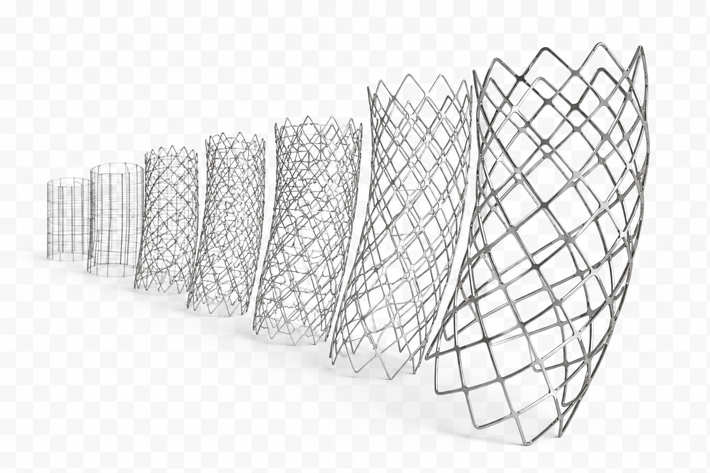

Patent Constraints
Existing intellectual property restricted the permissible stent patterns and reduced the available geometric design space.
Computational Product Development
Creating an automated computational system to generate, analyze, compare, and optimize thousands of laser-cut nitinol stent designs within a tightly constrained medical-device design space.

Project Snapshot
Industry
Implantable Medical Devices
Product Type
Self-Expanding Aortic Stent-Graft
Primary Role
Analysis Automation and Design Optimization
Design Scale
Thousands of Designs Evaluated
The Product Objective
The development objective was to design a laser-cut nitinol support structure for an aortic stent-graft using W. L. Gore & Associates’ established ePTFE graft technology.
The existing product used a wire-based support architecture. A laser-cut structure offered the possibility of a substantially smaller compressed profile while still self-expanding to the required deployed diameter.
A smaller delivery profile could improve device trackability and expand the range of vascular anatomies that could accommodate the delivery system.
However, the new structure still had to provide adequate radial support, conformability, deployment behavior, dimensional stability, and long-term fatigue resistance.
Why the Design Was Difficult
Existing intellectual property restricted the permissible stent patterns and reduced the available geometric design space.
Nitinol behavior required nonlinear constitutive modeling and careful interpretation of strain during crimping, deployment, and cyclic loading.
Strut width, thickness, length, curvature, connectivity, spacing, and repeating patterns influenced several performance measures at once.
Producing laser-cut nitinol prototypes required specialized manufacturing and finishing processes.
Physical testing to demonstrate long-term cyclic durability could require months of accelerated cycling.
Designs had to balance compressed profile, expansion, strength, flexibility, fatigue life, manufacturability, and patent compliance.
The Conventional Process
Finite element analysis could estimate strain, deployment behavior, radial performance, and relative fatigue risk before a prototype entered long-duration testing.
This reduced dependence on testing alone, but each candidate design still had to be created, meshed, analyzed, reviewed, and compared manually.
Because the variables interacted, changing one dimension could improve one response while worsening several others. Sequentially modifying a design based on engineering intuition remained a slow trial-and-error process.
Even an experienced analyst could only examine a small fraction of the possible designs. The central problem therefore became one of scale: how could the team search thousands of viable combinations rather than manually evaluating a few?
The Process Limitation
Sequential Development
Automated Exploration
My Approach
No existing tool performed the complete workflow needed for this development problem. I therefore learned and combined several advanced software technologies and wrote custom code that allowed independent engineering programs to exchange information.
The resulting system could define a candidate stent pattern, create the geometry, generate a finite element model, mesh the model, solve the nonlinear analysis, extract the required results, and store those results in a consistent format.
Statistical methods were then used to compare designs, identify relationships among variables, quantify design sensitivity, and determine which combinations produced the strongest overall performance.
Once trained and validated, the system could operate with limited analyst intervention and evaluate thousands of candidate designs over a period of weeks.
Automated Analysis System
Establish design variables, geometric limits, material inputs, patent boundaries, and performance objectives.
Automatically construct a unique stent pattern from the selected variable combination.
Transfer geometry into the analysis environment and create materials, contacts, loads, and boundary conditions.
Generate the finite element mesh and solve the nonlinear loading and deformation sequence.
Extract standardized strain, fatigue, displacement, force, profile, and deployment metrics.
Compare results, identify sensitivities, and reveal interactions among design variables.
Select new candidates and move the search toward the highest-performing design region.
Design-Space Exploration
A stent pattern contains many variables, but those variables cannot be optimized independently.
Increasing strut width, for example, could improve radial strength but also increase compressed profile and local bending strain. Increasing flexibility could improve conformability while reducing stability. Modifying connector geometry could move peak strains but introduce new manufacturing or patent concerns.
Automated evaluation allowed these relationships to be studied across a much larger population of designs. Statistical analysis made it possible to distinguish strong design drivers from weak ones and identify interactions that were not obvious from isolated simulation results.
Instead of asking whether a single proposed design worked, the team could determine where favorable design regions existed and how robust those regions were to changes in multiple variables.
Interrelated Design Variables
W
Influenced radial support, local strain, fatigue, profile, and manufacturability.
T
Affected stiffness, force, compressed diameter, strain concentration, and laser-cut processing.
L
Changed flexibility, expansion behavior, stress distribution, and axial stability.
R
Controlled bending strain and fatigue risk near crowns, connectors, and direction changes.
C
Influenced pattern stability, conformability, deployment symmetry, and load transfer.
P
Affected cell size, structural uniformity, axial behavior, patent position, and overall profile.
Technical Contributions
Defined the automated sequence linking design creation, simulation, results extraction, comparison, and optimization.
Wrote code that allowed multiple specialized engineering applications to exchange data and execute coordinated tasks.
Converted stent geometry into a controllable design definition that could generate thousands of unique candidates.
Automated model creation, meshing, nonlinear solution, post-processing, and standardized results extraction.
Used large simulation datasets to identify design sensitivities, dependencies, interactions, and promising regions.
Directed the computational search toward a viable design that balanced multiple competing requirements.
Change in Engineering Scale
1
An analyst creates, solves, reviews, and modifies one candidate at a time.
2,000+
Thousands of candidate designs were created and analyzed through the automated system.
8,000+
Automation eliminated thousands of hours of repetitive manual model construction and analysis.
Physical Validation
The automated system was not intended to replace physical testing. Its purpose was to determine which design deserved the investment required for manufacturing and long-duration validation.
After thousands of possible configurations were evaluated, a viable optimized design was selected for prototype fabrication and fatigue testing.
The selected design passed the required durability testing, supporting the validity of the computational screening and optimization process.
This result demonstrated that large-scale simulation could reduce development risk by reserving costly physical testing for candidates with a substantially stronger analytical basis.
Engineering Impact
Thousands of designs could be evaluated in weeks instead of relying on a small number of manually generated candidates.
Physical prototypes were reserved for designs that had already demonstrated strong analytical performance.
Statistical analysis revealed variable interactions and sensitivities that were difficult to identify through isolated studies.
Every candidate was modeled and compared using a consistent automated process.
The underlying automation methods could be adapted to other large parametric engineering problems.
The selected optimized design passed the required long-duration fatigue testing.
Project Outcome
The automated design system evaluated more than two thousand candidate designs and replaced an estimated eight thousand or more hours of repetitive manual analysis.
It created a structured method for exploring a narrow patent-constrained design space containing numerous interdependent variables and competing performance requirements.
A viable optimized design was selected from the computational study, manufactured, and subjected to the required long-duration fatigue testing. The design passed the life requirements.
More importantly, the project demonstrated that a previously impractical product-development problem could be solved by independently learning new technologies, integrating specialized software, and creating a capability that did not previously exist within the conventional development process.
Engineering Reflection
The decisive step was not improving the traditional design loop. It was recognizing that the traditional loop could not search the problem at the required scale. By creating a new automated process, the engineering question changed from “Which design should we try next?” to “What does the complete design landscape tell us?”
Technical Context
Public medical-device literature describes laser-cut nitinol stents as patterned structures manufactured from nickel-titanium tubing. Finite element modeling is commonly used to study radial compression, deployment, deformation, and fatigue in self-expanding nitinol devices.
Gore publicly describes vascular endoprostheses that combine nitinol support structures with ePTFE graft materials. This case study describes a historical development program at a general engineering level and does not identify a commercial product.
This case study describes my engineering methods and responsibilities at a general level. Proprietary product geometry, patent analyses, material models, design variables, optimization settings, test specifications, software code, and confidential performance results have been intentionally excluded.